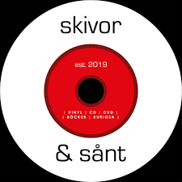

<!DOCTYPE html>
<html lang="en">

<head>

    <meta charset="UTF-8">

    <title>Liten med javascript</title>

    <!-- Kopplar en CSS fil  till detta dokument som heter litren.css-->
    <link rel="stylesheet" type="text/css" href="./css/liten.css">

    <!-- Kopplar en Javsacript fil till detta dokument som heter liten.js-->
    <script type="text/javascript" src="./js/liten.js"></script>

</head>

<body>

    <!-- Tecknet till vänster är start på en kommentar
       tecknet till höger är slutet på en kommentar -->


    <div id="itemContainer">
        <!-- En div som kan ses som en egen yta på ett papper-->

        <!-- Nedan är en annons i html som kan ses som att den ritas på den yta
            som vi ovan kallade itemContainer. 
            Denna yta ritas på itemContainer med hjälp av en funktion i javascript
            som heter createHtml.

            <div class="smallItem">

               
               <h1>Lasses greatest hits</h1>
               <p>Här kan ni lyysna till Lasses bästa låtar genom tidena från tidigt 60 tal
                  till nutid
               </p>

            </div>

       -->

    </div>


</body>


</html>